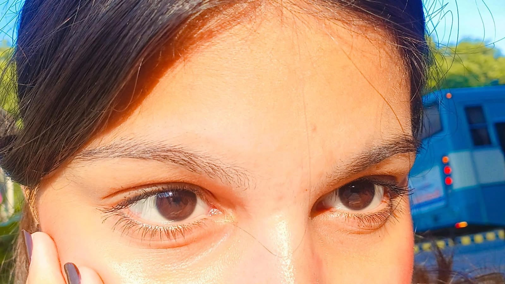
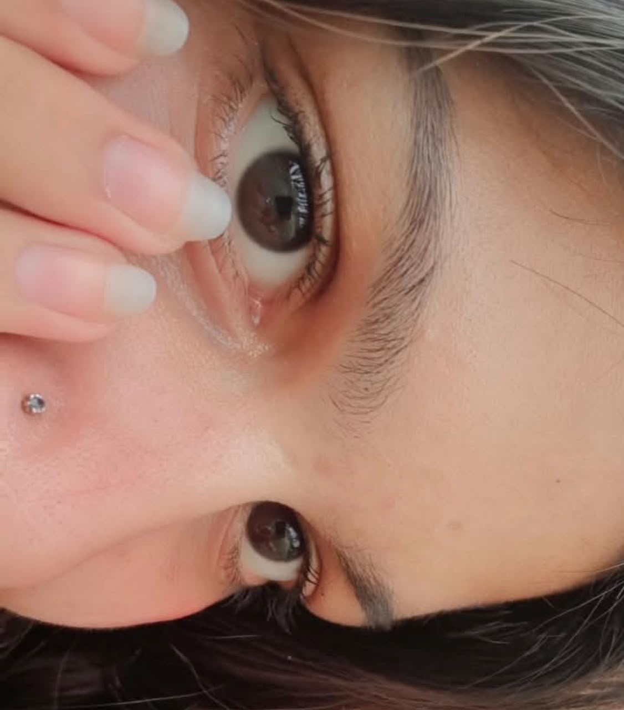
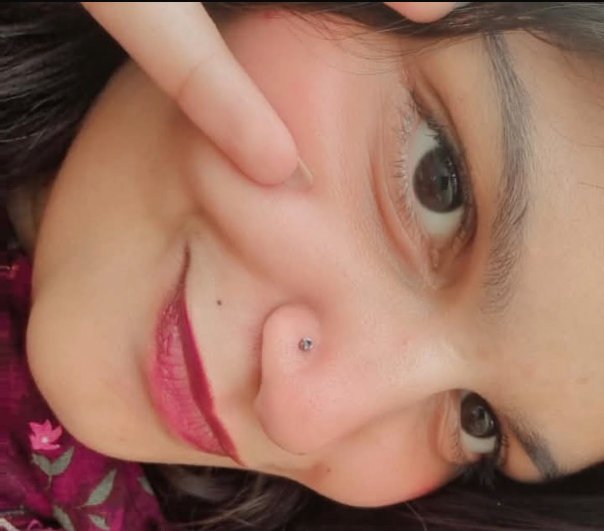
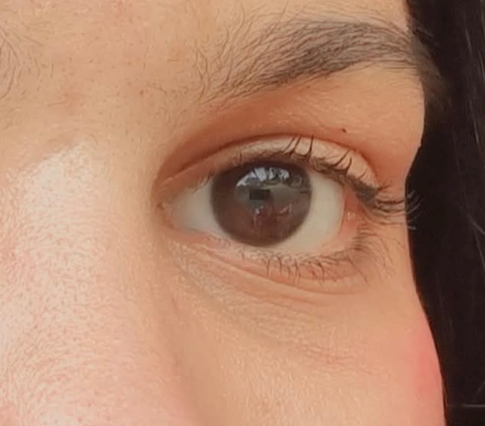
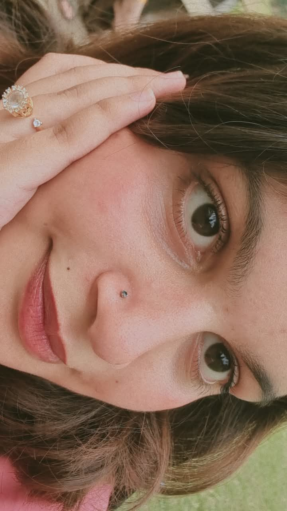
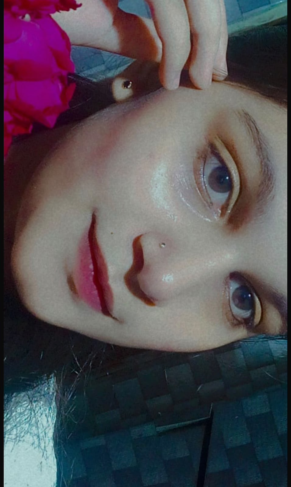
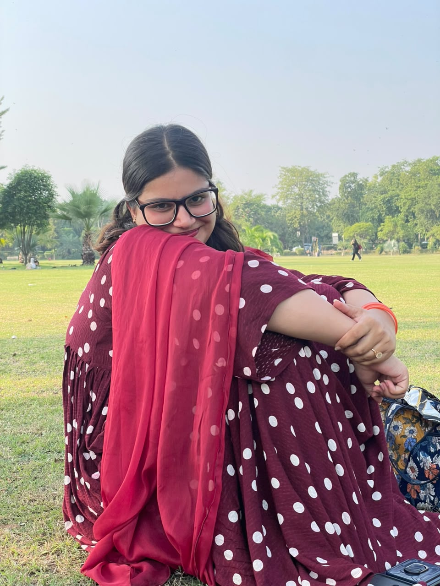
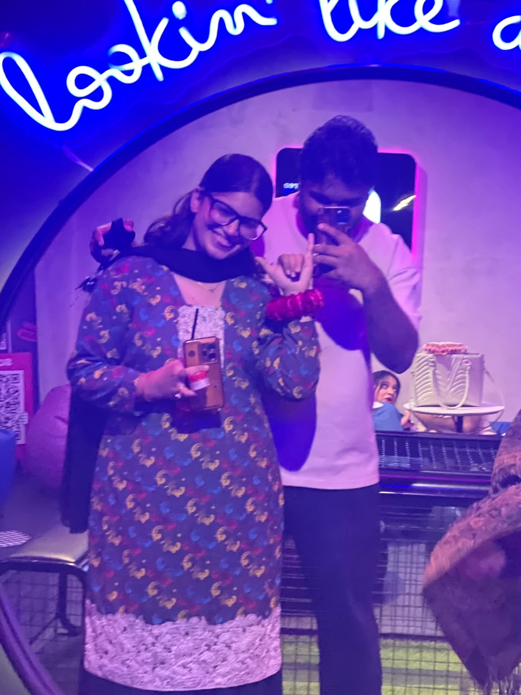

PHOTO 01 · CHAPTER 03Those Eyes in the Sunlight
FLIP TO READ ↗A LITTLE THOUGHT
Those Eyes in the Sunlight
A little keepsake, a familiar detail, and another reason this moment belongs in our story.
TAP TO TURN BACKCHAPTER 03 · A PAGE FROM OUR STORY
Moments I wish I could frame forever.
← BACK TO ALL CHAPTERSTEN LITTLE MOMENTS
Tap any card to turn it over. The photographs and videos are little pieces of our story.

PHOTO 01 · CHAPTER 03A little keepsake, a familiar detail, and another reason this moment belongs in our story.
TAP TO TURN BACK
PHOTO 02 · CHAPTER 03A little keepsake, a familiar detail, and another reason this moment belongs in our story.
TAP TO TURN BACK
PHOTO 03 · CHAPTER 03A little keepsake, a familiar detail, and another reason this moment belongs in our story.
TAP TO TURN BACK
PHOTO 04 · CHAPTER 03A little keepsake, a familiar detail, and another reason this moment belongs in our story.
TAP TO TURN BACK
PHOTO 05 · CHAPTER 03A little keepsake, a familiar detail, and another reason this moment belongs in our story.
TAP TO TURN BACK
PHOTO 06 · CHAPTER 03A little keepsake, a familiar detail, and another reason this moment belongs in our story.
TAP TO TURN BACK
PHOTO 07 · CHAPTER 03A little keepsake, a familiar detail, and another reason this moment belongs in our story.
TAP TO TURN BACK
PHOTO 08 · CHAPTER 03A little keepsake, a familiar detail, and another reason this moment belongs in our story.
TAP TO TURN BACKA little keepsake, a familiar detail, and another reason this moment belongs in our story.
TAP TO TURN BACKA little keepsake, a familiar detail, and another reason this moment belongs in our story.
TAP TO TURN BACKA LITTLE COLLECTION OF OUR MEMORIES
Some moments stay with us, especially the ones we see in your eyes.